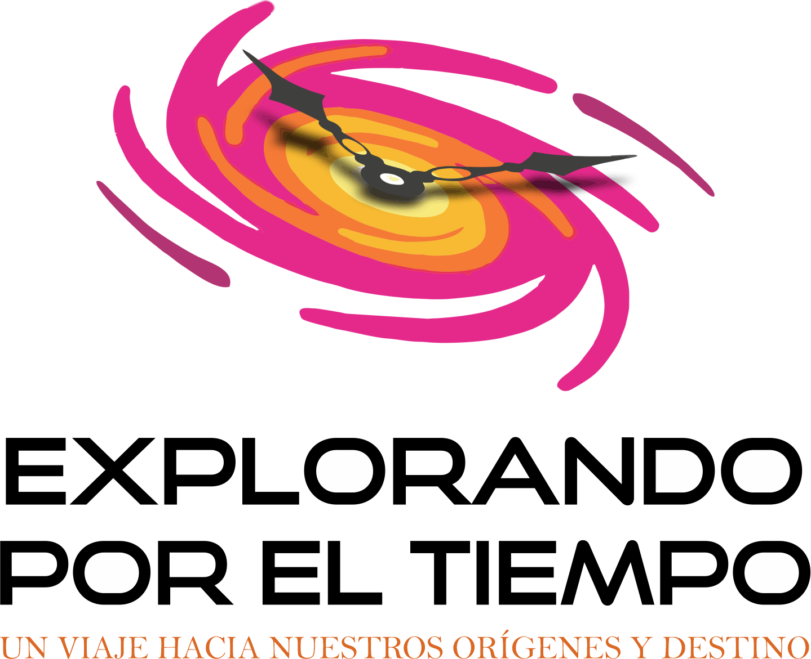

Proyecciones envolventes
El videomapping modifica la sala y construye escenarios que acompañan el recorrido.

Una visita inmersiva del Museo Scasso que combina proyecciones envolventes, relato en vivo y objetos de colección para viajar por grandes transformaciones del Universo, la vida y nuestro territorio.
La sala se convierte en un dispositivo narrativo. Las imágenes ocupan el espacio, el relato acompaña cada salto temporal y las piezas del museo permiten mirar de cerca las huellas de esos procesos.
El videomapping modifica la sala y construye escenarios que acompañan el recorrido.
Un guía conduce la experiencia, conecta las escalas del tiempo y dialoga con el grupo.
Rocas, fósiles, réplicas y piezas de colección vinculan la inmersión con el conocimiento científico.
El tiempo funciona como hilo conductor para relacionar procesos que suelen presentarse por separado. La experiencia parte de las grandes escalas del Cosmos, atraviesa la historia de la Tierra y de la vida, y vuelve al paisaje regional y al presente.
Los contenidos definitivos, la duración y los grupos destinatarios se encuentran en desarrollo.
Tiempo, materia, estrellas, planetas y formación de la Tierra.
Origen, evolución, transformaciones y evidencias del pasado.
El Paraná, sus paisajes, sus memorias y los desafíos del presente.
El equipo trabaja en los audiovisuales, el dispositivo escénico y el recorrido guiado. Las fechas, edades, duración, cupos y modalidad de reserva se publicarán cuando la propuesta esté lista.
Don Bosco 580, San Nicolás de los Arroyos, provincia de Buenos Aires.